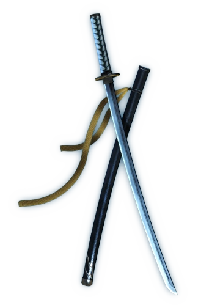

Vergil
Vergil is the older twin brother of Dante and one of the main antagonists of the Devil May Cry franchise.
Sword that is used by Vergil
Arkham helps Vergil to break the first seven seals Sparda cast upon the Temen-ni-gru, and then directs him to the Forbidden Land at the base of the tower. Vergil is later seen alongside Arkham at the top of the emerging tower. When the Hell Vanguard they sent to kill Dante returns, having failed its task, Vergil immediately dispatches it.
Vergil waits at the top of the tower for Dante, and at one point dispatches Arkham to eliminate Lady. When Dante reaches the peak of the tower, the two banter and then ferociously battle. Vergil emerges victorious, and takes Dante's half of the Perfect Amulet as his prize. Though Dante's Devil Trigger begins to manifest and Vergil prepares to fight him again, Arkham urges him to ignore Dante because "[they] already have all [they] need". The two then jump off the tower to reenter the Forbidden Land.
As Vergil and Arkham approach the final door to the Lair of Judgement, Vergil reveals his knowledge of Arkham's betrayal, and deals him a mortal blow. He then enters the chamber and commences the ritual to open the gate to the demonic world. During this ritual, he is momentarily interrupted by a blinded Beowulf, who has mistaken him for Dante. However, Vergil quickly vivisects the devil, and takes his soul as a Devil Arm.
While Dante was hurrying up to the final seal, Vergil had no luck on unlocking the seal, and was later interrupted by Dante. The twins engaged another fight which was interrupted by Lady causing the battle to end in a tie. Both demonic brothers are equally wounded, and Jester makes his appearance by announcing that everybody has served their role nicely. Jester later turned back and forth between Arkham and Jester, explaining why Vergil's ritual was incomplete, and why Vergil had failed against Dante and Lady. Arkham completes the ritual, and then plays with the three warriors while waiting for the tower to activate. Once it does, he knocks them off the ascending platform, wherein Vergil falls into an abyss.
Later, after Dante enters the Netherworld, Vergil is seen passing through the Divine Library, with Lady still huddled up, wounded and in grief, after her battle with Dante. She hears his footsteps and looks up to see who it was, but by that time, he had already gone through the door that Dante took. Vergil later interrupts Dante's fight with the ascended Arkham, and the twins finish Arkham off together. However, Vergil has not given up his goal of obtaining the Force Edge, and the twins are again forced to fight. Though Dante is able to defeat Vergil, he cannot convince him to return to the Human World. Vergil lets himself fall even deeper into the Netherworld.
In the epilogue, Vergil is seen in the Room of Fallen Ones, while three glowing orbs approach. Vergil recognizes the approaching devil, remarking that if Sparda was capable of defeating the Demon King, then he should be capable of doing it too, before discarding his scabbard and charging to fight.
In terms of physical appearance, Vergil has fair, yet pale skin, and white, swept back hair, which puts emphasis on the fierce, yet stoic expression on his face; however, when his hair is brushed down or becomes wet, his appearance is physically indistinguishable from his younger twin brother, Dante. Just like his brother, he also has the same, blue eyes.
This page was created for practice and gaining skills(and to get a mark)
Name of creator
Surname of creator
Insta of creator
Tg of creator